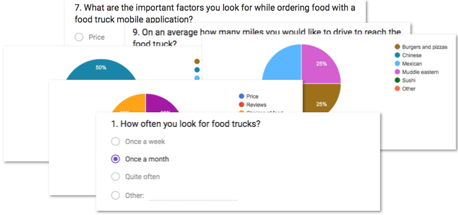
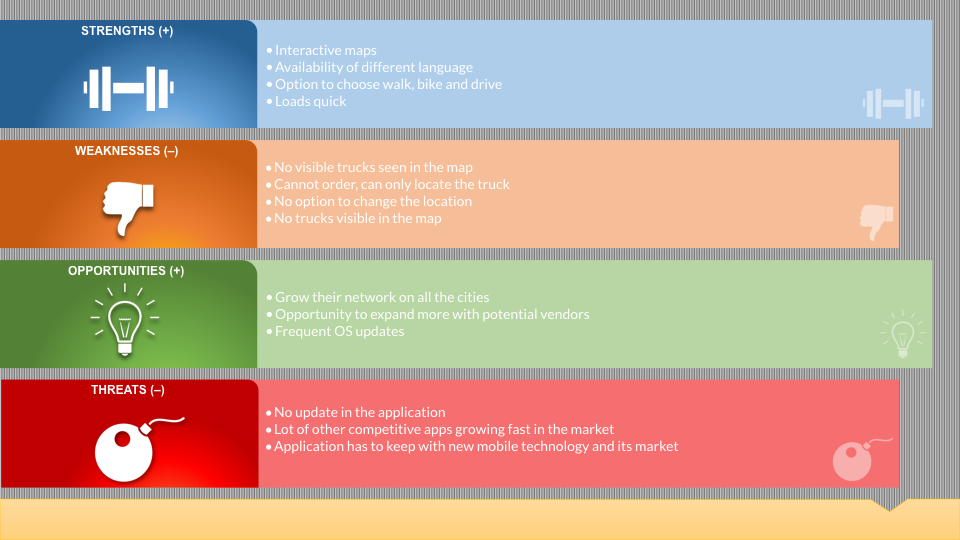
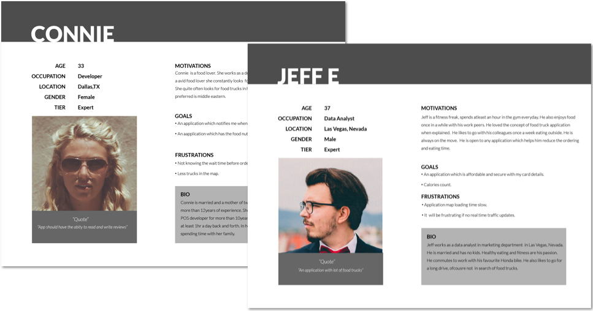
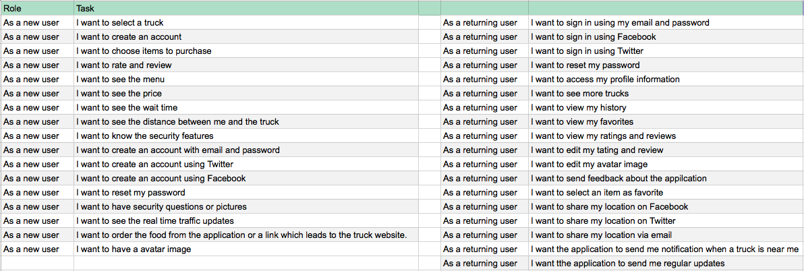
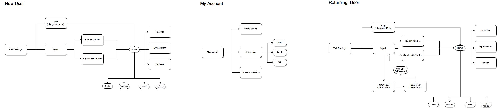
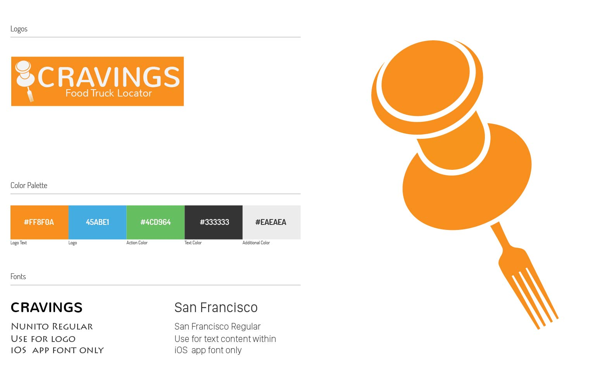
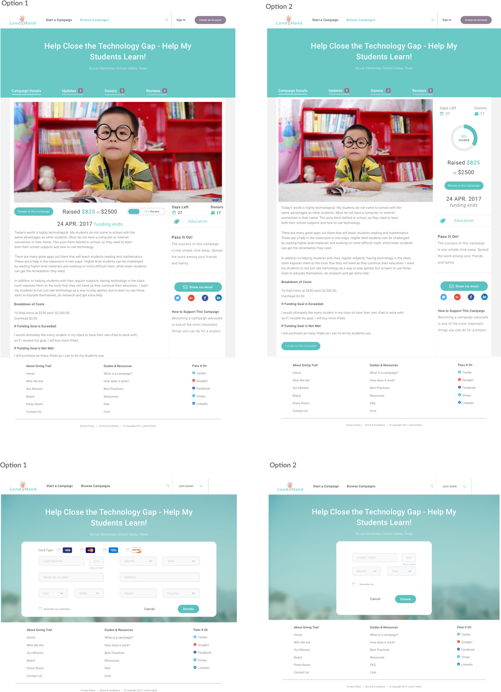

Case Study - Cravings
Summary
Cravings is a food truck mobile application that allows users to find food trucks near them. This application lets the consumers discover, select and purchase food from nearby food trucks, Consumers can create accounts, view their history of transactions and provide feedback for each food truck they have purchased from.After thoroughly researching on other food truck application, I designed Cravings to address the pain areas by designing a solution which is easier for the consumers to use with less hassle.
Problem
Users did not have a quick, convenient and safe check out experience while ordering food, also many of those apps do not specialize in food trucks - their searches are very broad and sometimes lack variety of food options.
Solution
Cravings lets the end user register or skip the registration and continue.
- Map View
- Register User
- Payment History
- Read, Write and Rate about the food truck
- Read, Write and Rate about the food truck
- Favorites
Once the user enables the map view, the application captures the location and lists the food trucks available. It has information about the Current location, hours of operation, food Menu and review of the food truck service.
New users can register with this application by entering their personal information like name, address, phone number, email address and credit/debit card information. This enables a registered user to check out in a quicker and convenient manner. If a User is not willing to register, they can do so by clicking on the “Skip page”, while the he/she can still choose their food truck and order food.
This application allows the user to view his/her previous transaction. These transactions will stored in the application only for 30days. Transaction also be dowloaded.
This application lets the user to read, write reviews and rate on the food truck. It also enables you to attach photos for the relevant food truck.
This application lets the user to read, write reviews and rate on the food truck. It also enables you to attach photos for the relevant food truck.
This application allows the user to add a menu/food truck to their favorite section. This enables the user to conveniently select their favorite menu/food truck in no time and place their order.
Research and Discovery
User Survey Results
- There were variety of results to look for while ordering food using a food truck mobile application like review, price, wait time and choices of food.
- Many users believe that some of the negative sides of these apps is that they have "inaccurate information regarding the restaurants" and that "not all restaurants are listed or shown".
- 50% say they use food applications to look up restaurants and would like to receive notifications when a food truck is around.
- 50% say they would let the food truck application track their calories and order food accordingly.
- 75% say they look for food trucks between 0-2 miles. This lets the user conveniently discover a nearby truck and conveniently make a choice.
- Many of the users choose one app over the other due to honest reviews, accurate information, and bonus points if they have free delivery options and/or promo codes.

Survey Conclusion
Considering the information gathered from the survey, Cravings mobile food truck application needs to have updated and accurate information where users can leave honest reviews for future customers to help choose a better food truck. It needs to be convenient, easy to use, and offer a lot of information quickly.
Competitive Analysis
To better understand food truck applications, I conducted SWOT ( Strength, Weakness, Opportunities, Threat ) analysis on some of the existing food truck iOS application in the market.
User Personas
I created User personas picking users who regularly use mobile food truck applications. I drafted their experiences based on their inputs.
Click to enlarge{kind=link}
{kind=link}
User Stories and Flows
I created user stories and flows using the results from my survey. This helped ensure that each flow was prioritized and obstacle-free. My focus was to make sure that the users can have a successful experience from start to finish even without signing in.

Low Fidelity Wireframes
After completing my user research, I was ready to begin creating the look and feel of the application. With the help of my user flows and user stories, I decided to build this product with ease of use and accuracy in mind. Low fidelity wireframes were created within Balsamiq.
 View all wireframes.
View all wireframes.
Branding
For the Brand name, I brainstormed ideas through mind mapping method. My goal was to create an identity that would better communicate the meaning while also confining to branding guidelines.
Testing and Designs

View Prototype
Conclusion
Building Craving was fun. This helped my perspective of design to be more User-centric. I built this with users in mind from start to finish.I invested a lot of time and energy conducting user research and user testing. Even with that being said, I do believe that an area for development and improvement would be in usability testing. I would've engaged in more testing with potential users to narrow down on the user flows and the functionality of the app compared to other food applications on the market.